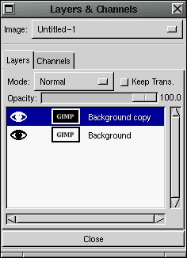
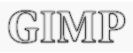
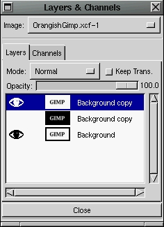
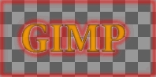

Hola de nuevo, artistas del Gimp. Aquí teneis el segundo
artículo de Linux Focus sobre GIMP. En este número Manuel se
ha concentrado en el uso de capas en Photoshop para crear algunos bonitos
efectos con texto. Afortunadamente GIMP ha sido ampliamente desarrollado
durante el último año, y su habilidad para manipular capas
es uno de sus puntos fuertes. Y mientras tenga la suerte, me gustaría
poder conectar con un sitio web muy bueno que me permite mantenerme al
día de las versiones más recientes de GIMP:
http://freshmeat.unreal.org.
Cada vez que sale una nueva versión de GIMP, GTK o cualquier otro
software de Linux, freshmeat lo menciona casi inmediatamente. Es un sitio
bien organizado y clasificado con una gran utilidad. ¡Lanza tu navegador
y échale un vistazo! |
Así pues, sin más preámbulos, veamos qué
herramientas de GIMP se pueden usar para hacer lo mismo que ha hecho Manuel con
Photoshop en su artículo. |
En nuestro último artículo de GIMP intentamos
familiarizarnos con la caja de diálogo de Layers & Channels
(capas y canales). Esta caja de diálogo es lo que usaremos para
conseguir nuestros efectos. Ya mencionamos la última vez cómo
llegar a esta caja de diálogo y, un poco en general, cuál
era su aspecto, pero lo repetiremos brevemente para refrescarnos la memoria.
|

Bien, arriba tenemos el menú Imagen. En GIMP, cuando tienes más
de una imagen abierta, puedes usar este menú para elegir qué
imagen manipulará la caja de Capas y Canales.. Debajo del menú
Imagen tenemos dos pestañas separadas, la pestaña de Capas y
la pestaña de Canales. La pestaña de Canales nos permite ver
y manipular canales de color separados, mientras que la pestaña de
Capas es lo que usaremos para manipular las capas de nuestra imagen. No
mencionaremos más la pestaña de canales en este artículo
ya que no la usaremos (Te animamos a experimentas con ella por ti mismo).
Miremos ahora la pestaña de Capas. En la sección superior
de la pestaña de Capas vemos el menú de Modo. Es un menú
desplegable que nos proporciona un montón de maneras de operar en una
capa concreta. Puedes ser muy entretenido experimentar con este menú.
El botón "Keep Trans." (mantener transparencia) es para mantener la
transparencia de una capa mientras se manipula. La barra de desplazamiento
"Opacity" (Opacidad), como ya vimos en el último artículo,
controla la opacidad de la capa, o en otras palabras, controla hasta qué
grado la imagen es transparente. Mira el artículo del último
número para una explicación completa. Bajo estos es donde nuestras
capas se muestran. En la parte izquierda de esta lista hay unos iconos con
forma de ojo. Estos controlan si una capa es visible o no. Si el icono
aparece, la capa es visible, si el icono no aparece, la capa es invisible.
A su lado, a la derecha, pueden aparecer iconos con una cruz de cuatro flechas.
Por defecto no aparecen en ninguna capa, pero pulsando con el ratón en
el espacio en blanco del medio los hará aparecer. Estos iconos controlan
qué capas se moverán durante una operación de movimiento.
A su lado, hay una mini vista de la capa. La puedes usar para ver más
o menos que aspecto tiene la capa. A su derecha está el título
de la capa. Puedes cambiar el título haciendo doble click en el
título: aparece una nueva ventana que te permite cambiarlo. En el
último artículo ya discutimos el menú de la caja de
diálogo de Capas y Canales. Puedes llegar a ese menú pulsando
con el botón derecho del ratón en el título de una
capa. |
Y ahora que nos hemos familiarizado con la caja de diálogo
de Capas y Canales, juguemos con algunas capas. Abre una imagen nueva con un
fondo blanco. Elige el color negro y escribe algún texto. Entonces abre
la caja de diálogo de Capas y Canales y pulsa con el botón derecho
del ratón en el título para obtener el menú. Elige
Duplicate Layer (duplicar capa) del menú. Esto simplemente creará
otra capa en la imagen que contenga lo mismo. Veamos ahora que puede hacer el
menú Modo por nosotros. Haz click en la capa superior de la lista de capas
y ves a la caja de la imagen y usa los menús para elegir
Image->Colors->Invert (Imagen, Colores, Invertir). Esto invertirá todos
los colores de la capa. Ahora tenemos dos capas que son opuestas una de la otra.
Usemos los menús para elegir Filters->Blue->Gaussian Blur(IIR)
(Filtros, Azul, Desenfoque Gaussiano(IIR)) y usa un valor de 3 o 4 para el
desenfoque. |
Ahora que tenemos dos capas que son opuestas una de la otra, y una
de ellas está ligeramente difuminada, volvemos a la caja de
diálogo de Capas y Canales para probar algunas de las opciones de Modo.
Cada capa puede tener su propia opción de Modo, y la opción
de modo de la capa controla cómo se mezcla con el resto de capas bajo
ella. El valor por defecto es NORMAL que simplemente toma la capa y la pone
sobre las capas bajo ella. El modo NORMAL solo permite que se vean las
capas inferiores a través de los píxels transparentes de la capa
actual (o aquellos con opacidad inferior a 100%). Así pues lo que queremos
hacer es hacer click en la capa superior de la lista para controlar cómo
se mezcla esta capa con la de debajo. |
Si experimentas y pruebas diferentos modos del menú,
verás cómo cada modo cambia la operación utilizada para
mezclar las capas. No voy a explicar exactamente qué hace cada modo,
ya que ocuparía mucho. Aquí es donde conocer la teoría
del color te ayudará. Estos son ejemplos de algunos modos:
Addition (suma):
|
Darken Only (solo oscuro):
|
Difference (diferencia):
 |
Lighten Only (solo luminoso):
|
Multiply (multiplicación):
|
Subtract (substracción):
|
Algunos de estos resultados pueden parecer el mismo, pero si los miras con
atención verás que son todos diferentes. En al artículo de
Manuel menciona la operación Soft Light (luz suave) de Photoshop. La
operación Lighten Only (solo luminoso) de GIMP es muy similar a esta. Si
usas el modo Lighten Only obtendrás un resultado similar al logo de Linux
Focus en blanco y negro difuminado del artículo de Manuel. |

Podemos a añadir el colorido amarillento con unos pocos pasos más.
Vamos a la caja de diálogo de Capas y Canales, activamos la capa que
tiene el texto negro y el fondo blanco. Pulsamos con el botón derecho
en el título para obtener el menú y elegimos Duplicate Layer
(duplicar capa) y creamos un duplicado. Activamos este duplicado y usamos la
opción Raise Layer (elevar capa) del menú para moverla a la
primera posición de la lista. |
Ahora que tenemos una capa para añadirle color, volvemos
a la caja de la imagen y seleccionamos Select->By Color para obtener la caja
de diálogo de selección por color. Seleccionamos el modo
Replace (sustitución) y movemos la barra de desplazamiento de Fuzziness
Threshold (umbral de difuminado) a 175.0 aproximadamente. Ahora hacemos
click en la caja en una de las letras. Tu caja debería estar
completamente negra, pero al pulsar dentro de ellas las letras
aparecerán. Puedes entonces hacer click en una de las letras,
con lo que seleccionarás todos los píxels de la pantalla
que sean del mismo color que el píxel que has seleccionado.
Realmente, como hemos incrementado el umbral de difuminado, los píxels
que sean de un color parecido también serán seleccionados.
De esta manera, podemos seleccionar todas las letras.
|
Tenemos una región de la capa seleccionada, por lo que ahora podemos
añadir el color. Vamos a la caja de herramientas y usamos la paleta
para elegir un color amarillento. Cogemos el pote de pintura de la caja
de herramientas, vamos a la caja de la imagen y pulsamos en cualquier lugar
dentro. La región seleccionada, que deberían ser solo las
letras del texto, se debe pintar de amarillo. Si no es así, es que
has hecho algo mal, como no tener activada la capa correcta en la caja de
Capas y Canales. Comprueba que la capa activada es la superior... igual
no la has puesto bien!! |
Cuando tenemos esta capa con las letras coloreadas de amarillo,
volvemos a la caja de Capas y Canales y elegimos el modo MULTIPLY (multiplicar)
para la capa del texto amarillo. Si todas las capas son visibles, la caja de la
imagen debería mostrar nuestro texto con un coloreado amarillento en
el centro con un borde suavemente oscurecido. Podemos ir a la caja de Capas y
Canales, desplegar el menú de cualquier capa y elegir Merge
Visible Layers (mezclar capas visibles) . Esto combinará todas las capas
en una capa y pondrá el modo de esta nueva capa a NORMAL. Si quieres
deshacerte del fondo blanco y hacerlo transparente, usa la caja de diálogo
de selección por color para seleccionar el texto de nuevo, invierte
la selección y selecciona Edit->Clear para borrar la región
seleccionada. Esto te dejará con el texto en un fondo
transparente. |
Para un efecto realmente bonito, en lugar de usar una capa superior
con un color sólido, es mejor usar una textura. Así es como
hice la mía. He estado usando tres capas en mi demostración de
más arriba. La de abajo tenía un fondo blanco con el texto negro.
La de en medio tenía un fondo negro con un texto blanco, y estaba
ligeramente desenfocada. La de arriba tenía el fondo blanco y el
texto amarillo. Activé la capa superior y la dupliqué. Elegí
el duplicado superior y seleccioné Filters->Render->Plasma del menú
de la caja de la imagen y usé una semilla (seed) de 5 y una turbulencia
de 2.
 Esto trazó una textura en la capa superior. Activé la capa con
el fondo blanco y el texto amarillo, seleccioné la caja de la imagen
entera y usé el pote de pintura para poner la capa entera a un color
sólido. Elegí entonces Filters->Map->BumpMap del menú
de la caja de la imagen para abrir la caja de diálogo de Bump Map.
Elegí la capa con el plasma dibujado como bump map y jugué con
las otras opciones hasta que obtuve una capa con textura bonita, y pulsé
OK. Esto cambió mi capa de amarillo sólido a una capa de amarillo
con textura. Fui a la caja de Capas y Canales, pulsé con el botón
derecho en el título de la capa de plasma y elegí borrar para
eliminar esta capa... no la necesitaba más.
Esto trazó una textura en la capa superior. Activé la capa con
el fondo blanco y el texto amarillo, seleccioné la caja de la imagen
entera y usé el pote de pintura para poner la capa entera a un color
sólido. Elegí entonces Filters->Map->BumpMap del menú
de la caja de la imagen para abrir la caja de diálogo de Bump Map.
Elegí la capa con el plasma dibujado como bump map y jugué con
las otras opciones hasta que obtuve una capa con textura bonita, y pulsé
OK. Esto cambió mi capa de amarillo sólido a una capa de amarillo
con textura. Fui a la caja de Capas y Canales, pulsé con el botón
derecho en el título de la capa de plasma y elegí borrar para
eliminar esta capa... no la necesitaba más.
 Entonces pulsé con el botón derecho en la capa de la textura
amarilla y elegí Add Layer Mask (añadir máscara de capa).
En las opciones de añadir máscara dejé las opciones
por defecto en Blanco (opacidad completa). Activé entonces la capa
con el fondo negro y el texto blanco. Elegí Edit->Copy del menú
de la imagen, activé la capa de la textura amarilla can la máscara
y elegí Edit->Paste en el menú de la imagen. Elegí
Layers->Anchor Layer del menú de la imagen para poner la capa pegada
bajo la capa con la máscara. Me aseguré que la capa con la textura
amarilla estaba activada y seleccioné Apply Layer Mask de la caja de
Capas y Canales para aplicar la capa, que ocultó todo menos el texto
con textura. Todo lo que quedó por hacer fue elegir Merge Visible Layers
de la caja de Capas y Canales. Todo esto parece mucho trabajo, ¡pero es muy
sencillo si lo practicas!
Entonces pulsé con el botón derecho en la capa de la textura
amarilla y elegí Add Layer Mask (añadir máscara de capa).
En las opciones de añadir máscara dejé las opciones
por defecto en Blanco (opacidad completa). Activé entonces la capa
con el fondo negro y el texto blanco. Elegí Edit->Copy del menú
de la imagen, activé la capa de la textura amarilla can la máscara
y elegí Edit->Paste en el menú de la imagen. Elegí
Layers->Anchor Layer del menú de la imagen para poner la capa pegada
bajo la capa con la máscara. Me aseguré que la capa con la textura
amarilla estaba activada y seleccioné Apply Layer Mask de la caja de
Capas y Canales para aplicar la capa, que ocultó todo menos el texto
con textura. Todo lo que quedó por hacer fue elegir Merge Visible Layers
de la caja de Capas y Canales. Todo esto parece mucho trabajo, ¡pero es muy
sencillo si lo practicas! |
Podemos usar unas pocas herramientas de GIMP para crear el mismo
efecto luminoso que Manuel hizo usando un procedimiento casi idéntico.
Usamos la selección por color con un alto umbral para seleccionar todo
el fondo (incluso dentro de letras como P y O), y usamos Select->Shrink
(contracción) para llevar la región seleccionada lejos del
borde del texto. Usé un valor de contracción de solo 2 porque no
quería que se separase mucho. Usamos entonces Select->Feather (aligerar)
para difuminar la selección (usé un valor de feather de 5).
Elegimos un color rojizo de la paleta y el pote de pintura de la caja de
herramientas. Pulsamos dentro de la imagen y la región seleccionada se
pintará con este color rojo. Ahora queremos reducir la región
seleccionada y aligerarla de nuevo. Usamos los mismo valores de shrink y feather
que antes. Los valores posiblemente tienen que ser diferentes, dependiendo
del grosor de tu fuente de texto y tus preferencias personales. Puede ser bueno
poner un valor de niveles de Deshacer alto, para que puedas probar todos estos
pasos, juzgar el resultado y, si no te gusta, puedes usar el comando Deshacer
hasta el principio. El número de niveles de Deshacer se puede cambiar en
File->Preferences, en la pestaña de Interface.

Finalmente, usamos Edit->Clear para eliminar todo el exceso de rojo en el fondo.
Esto te dejará con un halo iluminado ligeramente alrededor del texto...
paro hay un paso más. Desgraciadamente, como puedes ver en la imagen,
cuando comprimíamos, la región seleccionada se alejaba del
borde de la imagen, por lo que tenemos que borrar el exceso de rojo alrededor
del borde de la imagen. ¡¡Afortunadamente, has aprendido
bastante por ahora para ser capaz de hacerlo tu solito!!
|
|
Traducido por Hugo Lastras Membrive
|
![[LinuxFocus Image]](../../common/May1998/border-short.jpg)